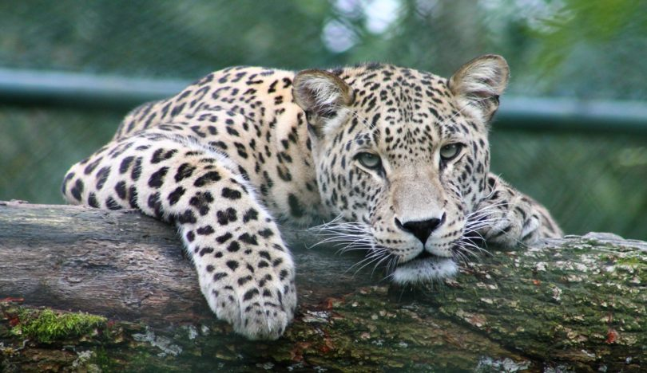

ANIMAIS SILVESTRES NO PARANÁ

É importante saber sobre os animais silvestres que sao importantes para a ecologia e o meio ambiente, animais que estao presentes no Paraná.
É importante saber sobre os animais silvestres que sao importantes para a ecologia e o meio ambiente, animais que estao presentes no Paraná.